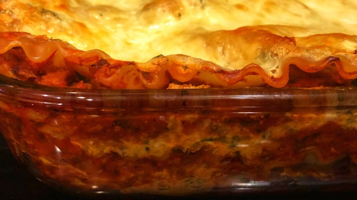

Lasagna

- Ingredients
-
- whole wheat lasagna noodles
- 1 pound lean ground beef
- 2 cloves garlic
- 1/2 teaspoon garlic powder
- 1 teaspoon dried oregano, or to taste
- 1 package cottage cheese
- 2 eggs
- 1/2 cup shredded Parmesan cheese
- tomato-basil pasta sauce
- 2 cups shredded mozzarella cheese
- Direction
-
- Preheat oven to 350 degrees F (175 degrees C).
- Fill a large pot with lightly salted water and bring to a rolling boil over high heat. Once the water is boiling, add the lasagna noodles a few at a time, and return to a boil. Cook the pasta uncovered, stirring occasionally, until the pasta has cooked through, but is still firm to the bite, about 10 minutes. Remove the noodles to a plate.
- Place the ground beef into a skillet over medium heat, add the garlic, garlic powder, oregano, salt, and black pepper to the skillet. Cook the meat, chopping it into small chunks as it cooks, until no longer pink, about 10 minutes. Drain excess grease.
- In a bowl, mix the cottage cheese, eggs, and Parmesan cheese until thoroughly combined.
- Place 4 noodles side by side into the bottom of a 9x13-inch baking pan; top with a layer of the tomato-basil sauce, a layer of ground beef mixture, and a layer of the cottage cheese mixture. Repeat layers twice more, ending with a layer of sauce; sprinkle top with the mozzarella cheese. Cover the dish with aluminum foil.
- Bake in the preheated oven until the casserole is bubbling and the cheese has melted, about 30 minutes. Remove foil and bake until cheese has begun to brown, about 10 more minutes. Allow to stand at least 10 minutes before serving.